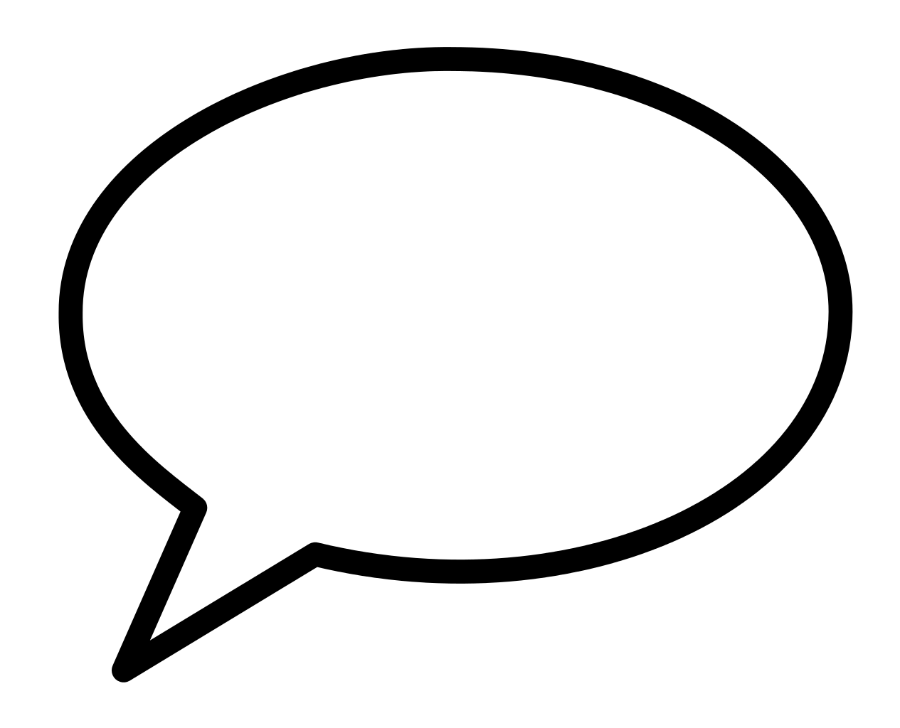
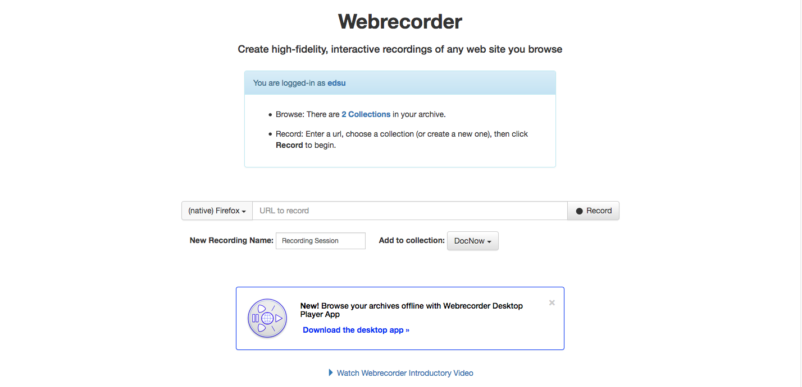
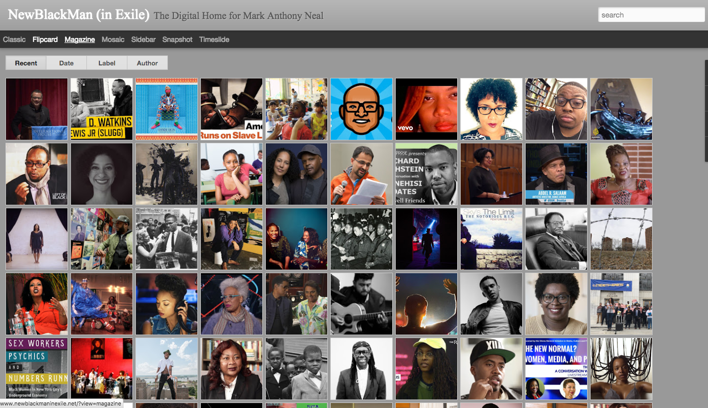
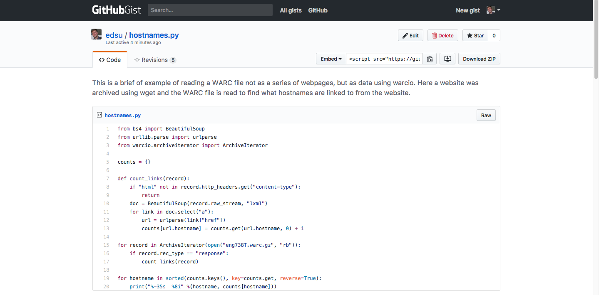
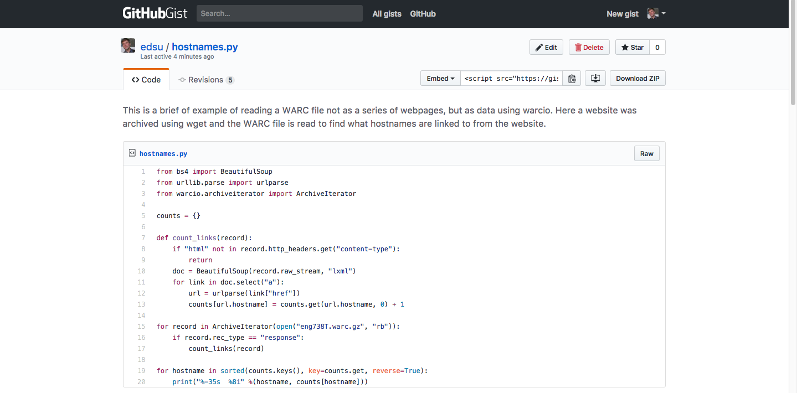

Working with Web Archives
Purdom Lindblad
purdom@umd.edu
Ed Summers
edsu@umd.edu
slides: http://bit.ly/www-workshop

 How much of the web is in the Internet Archive?
How much of the web is in the Internet Archive?
273,000,000,000 1 / 1,000,000,000,000 2 = .273 ???
1. Alpert, J. and Hajaj, N. (2008). We knew the web was big... Google.
2. Goel, V. (2016). Defining Web pages, Web sites and Web captures. Internet Archive.

 Archival coverage of the NYTimes homepage in 2016.
Archival coverage of the NYTimes homepage in 2016.
 Archival coverage of Igor Strelkov's VKontakte profile in 2014.
Archival coverage of Igor Strelkov's VKontakte profile in 2014.
Internet Archive: Exercise (15 mins)
- Look up a URL at wayback.archive.org. What do you notice when examining what is in (or not in) the archive?
- Try to add a page to the Internet Archive using the Save Page Now function.
- (Optional) Install the Wayback Machine Google Chrome plugin and use it to look up a webpage or archive a webpage.


 

Webrecorder: Exercise (15 mins)
- Create a Webrecorder account
- Create a collection and add web content to it.
- Download the Webrecorder Player.
- Download your collection and view it in the player.
- (Optional) See if you can open your WARC file and look at what
it contains.
Hypothesis: Exercise (15 mins)
- Create a Hypothesis account.
- Install the Chrome plugin or Bookmarklet.
- Annotate the OKCupid Wired article.
- Find the URL for sharing your annotation.
- (Optional) Comment on someone else's annotation.